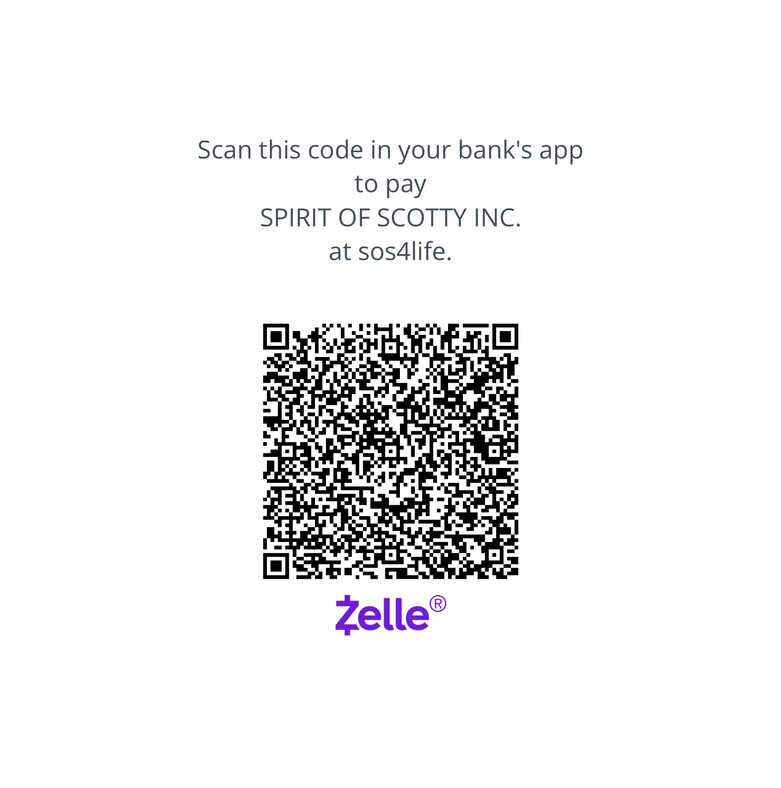

Give
Support the mission
Your generosity helps Spirit of Scotty grow public education, outreach, suicide-prevention awareness, and storytelling that honors Scotty’s life.
Give with Zelle
Open Zelle in your bank or credit union’s app and scan the code. Before sending, confirm that the recipient name shown is SPIRIT OF SCOTTY INC.
Zelle tag: sos4life
Zelle does not automatically issue a charitable donation receipt. Please keep your payment confirmation. If you would like a written acknowledgment, include your name and email address in the payment memo when your bank permits it.
Spirit of Scotty Inc. is a federally recognized 501(c)(3) nonprofit organization. EIN: 92-3569764.

A COPY OF THE OFFICIAL REGISTRATION AND FINANCIAL INFORMATION MAY BE OBTAINED FROM THE DIVISION OF CONSUMER SERVICES BY CALLING TOLL-FREE WITHIN THE STATE. REGISTRATION DOES NOT IMPLY ENDORSEMENT, APPROVAL, OR RECOMMENDATION BY THE STATE.
Registration and financial information: 1-800-HELP-FLA (435-7352) · FDACS.gov ↗